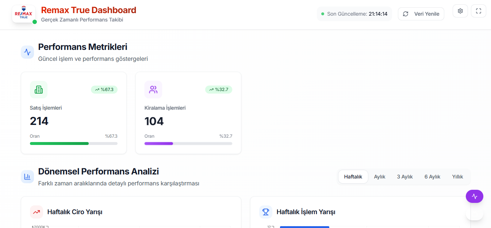
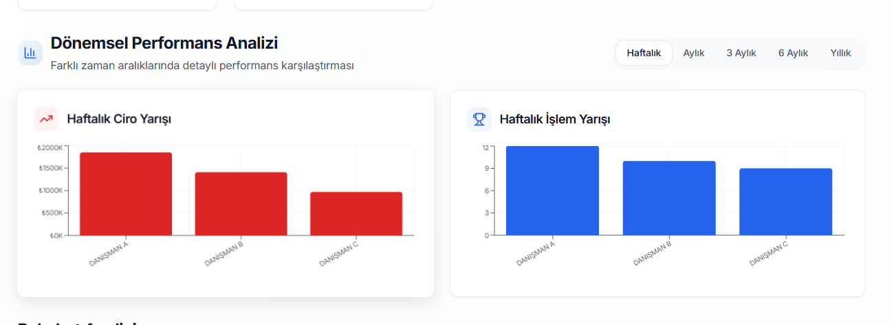
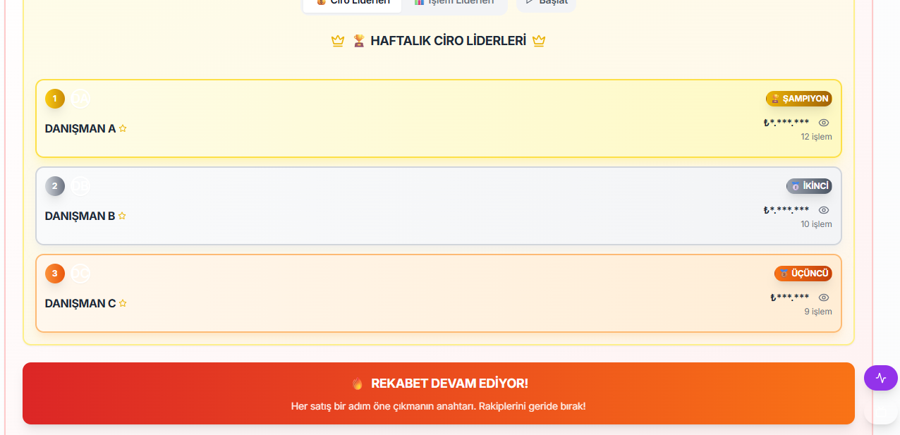
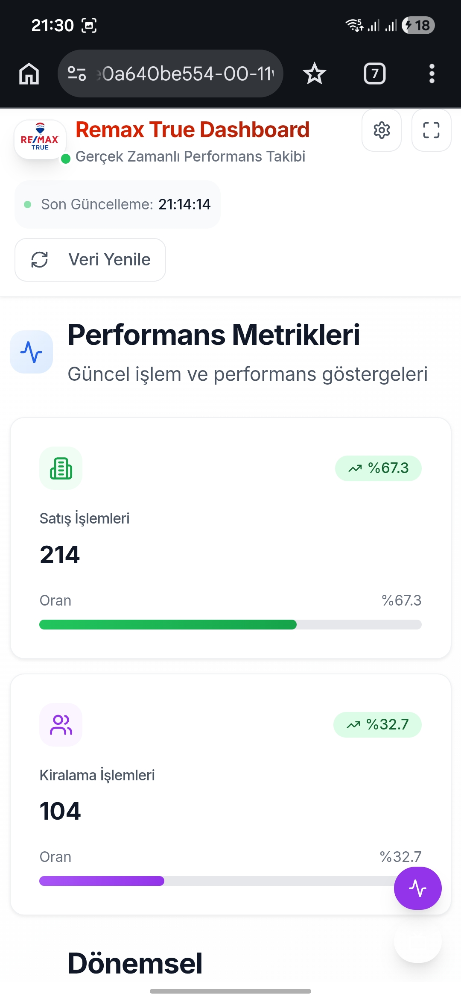
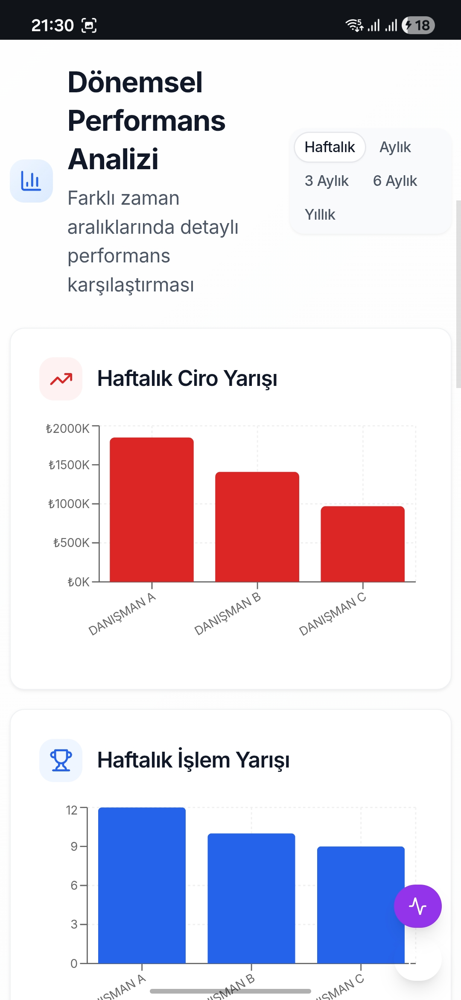
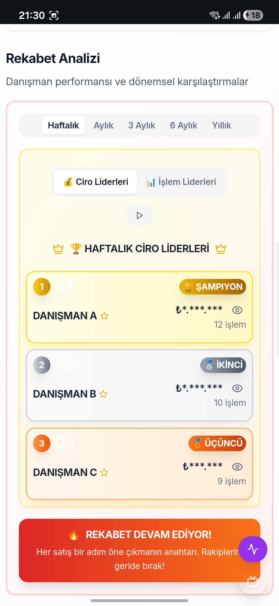
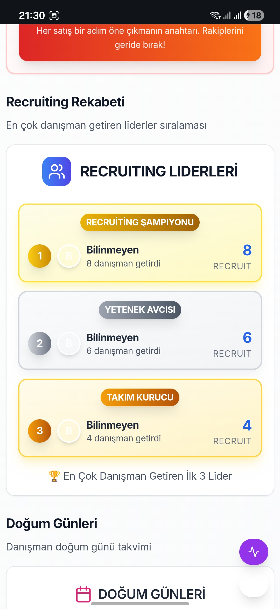
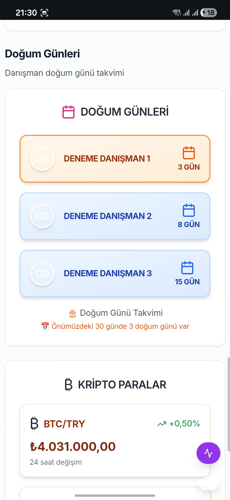
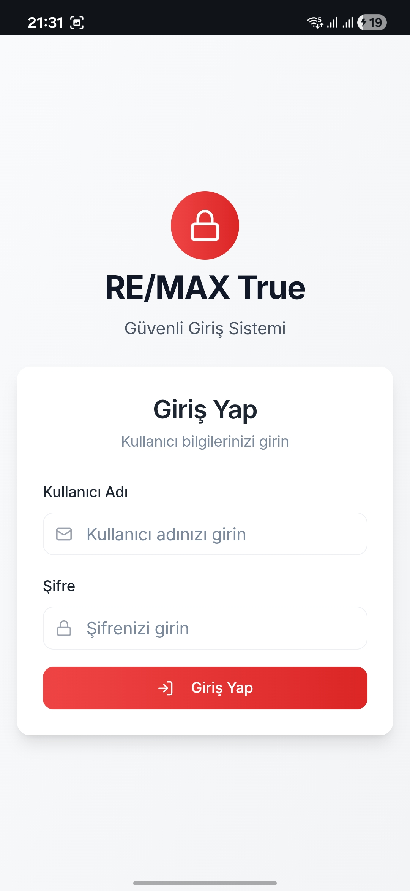

GAYRİMENKUL · VERİ GÖRSELLEŞTİRME · SAAS
40'tan fazla gayrimenkul danışmanının satış performansını, ofis cirosunu ve rekabet analizini gerçek zamanlı takip eden pano. Google Sheets'teki dağınık veriyi modern bir arayüze çevirir ve ofis TV'lerinde kendi kendine döner.
manuel süreçler ve veri körlüğü
panoyu ayakta tutan dört modül
215+ satırlık işlem verisi ve personel listesi otomatik senkronize edilir. Dolar, euro, altın ve kripto verileri ekranın altında canlı akar. TanStack Query ile önbellekleme yapılıp sunucu yükü minimize edilir.
Haftalık, aylık, 3/6 aylık ve yıllık grafikler. Lineer regresyon ile gelecek üç ayın ciro tahmini. Yıldızlar Kulübü'nden Crown Kulübü'ne ilerleme çubukları ve kalan ciro hesabı.
Ofis içi ekranlar için dashboard sayfaları arasında otomatik rotasyon: liderlik tablosu, piyasa, doğum günleri, recruiting. Klavye kısayollarıyla manuel kontrol da var.
Danışmanların ofise kazandırdığı adayların takibi, referans hiyerarşisi ve görselleştirilmiş recruiting liderleri tablosu.
performans, tip güvenliği ve ölçeklenebilirlik üzerine
React 18 · TypeScript · Vite · TanStack Query · React Context · Tailwind CSS · shadcn/ui · Framer Motion · Recharts · Wouter
Node.js 20 · Express.js · PostgreSQL · Drizzle ORM · Google Sheets API v4 · ExchangeRate-API · CoinGecko
Helmet · rate limiting · ortam değişkeni gizleme · Replit Autoscale · özel alan adı üzerinde SSL
öncesi ve sonrası
| Metrik | Önce | Sonra |
|---|---|---|
| Raporlama süresi | 8 saat | 5 saniye · tam otomatik |
| Veri güncelliği | Haftalık | 30 saniye |
| Hata oranı | %15 | %0,01 |
| Ofis motivasyonu | Ölçülmüyordu | %40 artış · görsel rekabet |
masaüstü pano ve mobil görünüm









İnteraktif demoda liderlik tablosu, ciro trendi ve piyasa göstergeleri canlı çalışıyor.